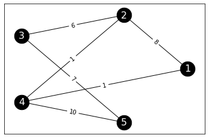
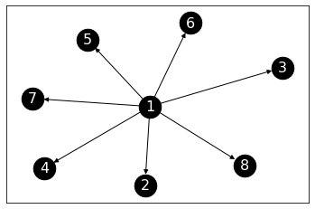
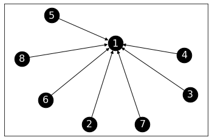
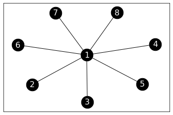

\(\newcommand{\P}{\mathbb{P}}\) \(\newcommand{\E}{\mathbb{E}}\) \(\newcommand{\S}{\mathcal{S}}\) \(\newcommand{\indep}{\perp\!\!\!\perp}\) \(\newcommand{\bmu}{\boldsymbol{\mu}}\) \(\newcommand{\bpi}{\boldsymbol{\pi}}\)
5.5. Random walks on graphs and application to PageRank#
As we mentioned earlier in this chapter, a powerful way to extract information about the structure of a network is to analyze the behavior of a walker randomly “diffusing” on it.
5.5.1. Random walk on a graph#
We first specialize the theory of the previous section to random walks on graphs. We start with the case of digraphs. The undirected case leads to useful simplifications.
Directed case We first define a random walk on a digraph.
DEFINITION (Random Walk on a Digraph) Let \(G = (V,E)\) be a directed graph. If a vertex does not have an outgoing edge (i.e., an edge with it as its source), add a self-loop to it. A random walk on \(G\) is a time-homogeneous Markov chain \((X_t)_{t \geq 0}\) with state space \(\mathcal{S} = V\) and transition probabilities
where \(\delta^+(i)\) is the out-degree of \(i\), i.e., the number of outgoing edges and \(N^+(i) = \{j \in V:(i,j) \in E\}\). \(\natural\)
In words, at each step, we choose an outgoing edge from the current state uniformly at random. Choosing a self-loop (i.e., an edge of the form \((i,i)\)) means staying where we are.
Let \(G = (V,E)\) be a digraph with \(n = |V|\) vertices. Without loss of generality, we let the vertex set be \([n] = \{1,\ldots,n\}\). The adjacency matrix of \(G\) is denoted as \(A\). We define the out-degree matrix \(D\) as the diagonal matrix with diagonal entries \(\delta^+(i)\), \(i=1,\ldots,n\). That is,
LEMMA (Transition Matrix in Terms of Adjacency Matrix: Directed Case) The transition matrix of random walk on \(G\) satisfying the conditions of the definition above is
Proof: The formula follows immediately from the definition. \(\flat\)
We specialize irreducibility to the case of random walk on a digraph.
LEMMA (Irreducibility in Directed Case) Let \(G = (V,E)\) be a digraph. Random walk on \(G\) is irreducible if and only if \(G\) is strongly connected. \(\flat\)
Proof: Simply note that the transition graph of the walk is \(G\) itself. We have seen previously that irreducibility is equivalent to the transition graph being strongly connected. \(\square\)
In the undirected case, more structure emerges as we detail next.
Undirected case Specializing the previous definitions and observations to undirected graphs, we get the following.
It will be convenient to allow self-loops, i.e., entry \(a_{i,i}\) of the adjacency matrix can be \(1\) for some \(i\).
DEFINITION (Random Walk on a Graph) Let \(G = (V,E)\) be a graph. If a vertex is isolated, add a self-loop to it. A random walk on \(G\) is a time-homogeneous Markov chain \((X_t)_{t \geq 0}\) with state space \(\mathcal{S} = V\) and transition probabilities
where \(\delta(i)\) is the degree of \(i\) and \(N(i) = \{j \in V: \{i,j\} \in E\}\). \(\natural\)
As we have seen previously, the transition matrix of random walk on \(G\) satisfying the conditions of the definition above is \( P = D^{-1} A, \) where \(D = \mathrm{diag}(A \mathbf{1})\) is the degree matrix.
EXAMPLE: (Random Walk on the Petersen Graph, continued) Let \(G = (V,E)\) be the Petersen graph.
G_petersen = nx.petersen_graph()
Show code cell source
nx.draw_networkx(G_petersen, pos=nx.circular_layout(G_petersen), labels={i: i+1 for i in range(10)},
node_size=600, node_color='black', font_size=16, font_color='white')

We have shown previously that the transition matrix is
\(\lhd\)
Weighted undirected case The previous definitions extend naturally to the weighted case.
Again we allow loops, i.e., self-weights \(w_{i,i} > 0\). For a weighted graph \(G\), recall that the degree of a vertex is defined as
which includes the self-weight \(w_{i,i}\), and where we use the convention that \(w_{i,j} = 0\) if \(\{i,j\} \notin E\). Recall also that \(w_{i,j} = w_{j,i}\).
DEFINITION (Random Walk on a Graph) Let \(G = (V,E,w)\) be a weighted graph with positive edge weights. Assume all vertices have a positive degree. A random walk on \(G\) is a time-homogeneous Markov chain \((X_t)_{t \geq 0}\) with state space \(\mathcal{S} = V\) and transition probabilities
\(\natural\)
Once again, it is easily seen that the transition matrix of random walk on \(G\) satisfying the conditions of the definition above is \( P = D^{-1} A, \) where \(D = \mathrm{diag}(A \mathbf{1})\) is the degree matrix.
EXAMPLE: (A Weighted Graph) Here is another example. Consider the following adjacency matrix on \(5\) vertices.
A_ex = np.array([
[0, 8, 0, 1, 0],
[8, 0, 6, 1, 0],
[0, 6, 0, 0, 7],
[1, 1, 0, 0, 10],
[0, 0, 7, 10, 0]
]
)
print(A_ex)
[[ 0 8 0 1 0]
[ 8 0 6 1 0]
[ 0 6 0 0 7]
[ 1 1 0 0 10]
[ 0 0 7 10 0]]
It is indeed a symmetric matrix.
print(LA.norm(A_ex.T - A_ex))
0.0
We define a graph from its adjacency matrix.
n_ex = A_ex.shape[0] # number of vertices
G_ex = nx.from_numpy_array(A_ex) # graph
To draw it, we first define edge labels by creating a dictionary that assigns to each edge (as a tuple) its weight. Here G.edges.data('weight') (see G.edges) iterates through the edges (u,v) and includes their weight as the third entry of the tuple (u,v,w). Then we use the function networkx.draw_networkx_edge_labels() to add the weights as edge labels.
edge_labels = {}
for (u,v,w) in G_ex.edges.data('weight'):
edge_labels[(u,v)] = w
pos=nx.circular_layout(G_ex)
nx.draw_networkx(G_ex, pos, labels={i: i+1 for i in range(n_ex)}, node_size=600,
node_color='black', font_size=16, font_color='white')
edge_labels = nx.draw_networkx_edge_labels(G_ex, pos, edge_labels=edge_labels)

The transition matrix of the random walk on this graph can be computed using the lemma above. We first compute the degree matrix, then apply the formula.
degrees_ex = A_ex @ np.ones(n_ex)
inv_degrees_ex = 1/ degrees_ex
Dinv_ex = np.diag(inv_degrees_ex)
P_ex = Dinv_ex @ A_ex
print(P_ex)
[[0. 0.88888889 0. 0.11111111 0. ]
[0.53333333 0. 0.4 0.06666667 0. ]
[0. 0.46153846 0. 0. 0.53846154]
[0.08333333 0.08333333 0. 0. 0.83333333]
[0. 0. 0.41176471 0.58823529 0. ]]
This is indeed a stochastic matrix.
print(P_ex @ np.ones(n_ex))
[1. 1. 1. 1. 1.]
\(\lhd\)
We specialize irreducibility to the case of random walk on a graph.
LEMMA (Irreducibility in Undirected Case) Let \(G = (V,E,w)\) be a graph with positive edge weights. Assume all vertices have a positive degree. Random walk on \(G\) is irreducible if and only if \(G\) is connected. \(\flat\)
Proof: We only prove one direction. Suppose \(G\) is connected. Then between any two vertices \(i\) and \(j\) there is a sequence of vertices \(z_0 = i, z_1, \ldots, z_r = j\) such that \(\{z_{\ell-1},z_\ell\} \in E\) for all \(\ell = 1,\ldots,r\). In particular, \(w_{z_{\ell-1},z_\ell} > 0\) which implies \(p_{z_{\ell-1},z_\ell} > 0\). That proves irreducibility. \(\square\)
By the previous lemma and the Existence of a Stationary Distribution Theorem, provided \(G\) is connected, it has a unique stationary distribution. It turns out to be straighforward to compute it as we see in the next subsection.
Reversible chains A Markov chain is said to be reversible if it satisfies the detailed balance conditions.
DEFINITION (Reversibility) A transition matrix \(P = (p_{i,j})_{i,j=1}^n\) is reversible with respect to a probability distribution \(\bpi = (\pi_i)_{i=1}^n\) if it satisfies the so-called detailed balance conditions
\(\natural\)
Instead, the next theorem explains why this definition is useful to us.
THEOREM (Reversibility and Stationarity) Let \(P = (p_{i,j})_{i,j=1}^n\) be a transition matrix reversible with respect to a probability distribution \(\bpi = (\pi_i)_{i=1}^n\). Then \(\bpi\) is a stationary distribution of \(P\). \(\sharp\)
Proof idea: Just check the definition.
Proof: For any \(j\), by the definition of reversibility,
where we used that \(P\) is stochastic in the last equality. \(\square\)
We return to random walk on a weighted graph. We show that it is reversible and derive the stationary dsitribution.
THEOREM (Stationary Distribution on a Graph) Let \(G = (V,E,w)\) be a graph with positive edge weights. Assume further that \(G\) is connected. Then the unique stationary distribution of random walk on \(G\) is given by
\(\sharp\)
Proof idea: We prove this in two parts. We first argue that \(\bpi = (\pi_i)_{i \in V}\) is indeed a probability distribution. Then we show that the transition matrix \(P\) is reversible with respect to \(\bpi\).
Proof: We first show that \(\bpi = (\pi_v)_{v \in V}\) is a probability distribution. Its entries are non-negative by definition. Further
It remains to establish reversibility. For any \(i, j\), by definition,
Changing the roles of \(i\) and \(j\) gives the same expression since \(w_{j,i} = w_{i,j}\). \(\square\)
EXAMPLE: (A Weighted Graph, continued) Going back to our weighted graph example, we use the previous theorem to compute the stationary distribution. Note that the graph is indeed connected so the stationary distribution is unique. We have already computed the degrees.
print(degrees_ex)
[ 9. 15. 13. 12. 17.]
We compute \(\sum_{i \in V} \delta(i)\) next.
total_degrees_ex = degrees_ex @ np.ones(n_ex)
print(total_degrees_ex)
66.0
Finally, the stationary distribution is:
pi_ex = degrees_ex / total_degrees_ex
print(pi_ex)
[0.13636364 0.22727273 0.1969697 0.18181818 0.25757576]
We check stationarity.
print(LA.norm(P_ex.T @ pi_ex - pi_ex))
2.7755575615628914e-17
\(\lhd\)
A random walk on a weighted undirected graph is reversible. Vice versa, it turns out that any reversible chain can be seen as a random walk on an appropriately defined weighted undirected graph. See Exercise 3.51 for a special case.
5.5.2. PageRank#
One is often interested in identifying central nodes in a network. Intuitively, they should correspond to entities (e.g., individuals or webpages depending on the network) that are particularly influential or authoritative. There are many ways of uncovering such nodes. Formally one defines a notion of node centrality, which ranks nodes by importance. Here we focus on one important such notion, PageRank. We will see that it is closely related to random walks on graphs.
A notion of centrality for directed graphs We start with the directed case.
Let \(G = (V,E)\) be a digraph on \(n\) vertices. We seek to associate a measure of importance to each vertex. We will denote this (row) vector by
where \(\mathrm{PR}\) stands for PageRank.
We posit that each vertex has a certain amount of influence associated to it and that it distributes that influence equally among the neighbors it points to. We seek a vector \(\mathbf{z} = (z_1,\ldots,z_n)\) that satisfies an equation of the form
where \(\delta^+(j) = |N^+(j)|\) is the out-degree of \(j\) and \(N^-(i)\) is the set of vertices \(j\) with an edge \((j,i)\). Observe that we explicitly take into account the direction of the edges. We think of an edge \((j,i)\) as an indication that \(j\) values \(i\).
On the web for instance, a link towards a page indicates that the destination page has information of value. Quoting Wikipedia:
PageRank works by counting the number and quality of links to a page to determine a rough estimate of how important the website is. The underlying assumption is that more important websites are likely to receive more links from other websites.
On Twitter, following an account is an indication that the latter is of interest.
We have already encountered this set of equations. Consider random walk on the directed graph \(G\) (where a self-loop is added to each vertex without an outgoing edge). That is, at every step, we pick an outgoing edge of the current state uniformly at random. Then the transition matrix is
where \(D\) is the diagonal matrix with the out-degrees on its diagonal.
A stationary distribution \(\bpi = (\pi_1,\ldots,\pi_n)\) is a row vector satisfying in this case
So \(\mathbf{z}\) is stationary distribution of random walk on \(G\).
If the graph \(G\) is strongly connected, we know that there is a unique stationary distribution by the Existence of a Stationary Distribution. In many real-world digraphs, however, that assumption is not satisfied. To ensure that a meaningful solution can still be found, we modify the walk slightly.
To make the walk irreducible, we add a small probability at each step of landing at a uniformly chosen node. This is sometimes referred to as teleporting. That is, we define the transition matrix
for some \(\alpha \in (0,1)\) known as the damping factor (or teleporting parameter). A typical choice is \(\alpha = 0.85\).
Note that \(\frac{1}{n} \mathbf{1} \mathbf{1}^T\) is a stochastic matrix. Indeed,
Hence, \(Q\) is a stochastic matrix (as a convex combination of stochastic matrices).
Moreover, \(Q\) is clearly irreducible since it is strictly positive. That is, for any \(x, y \in [n]\), one can reach \(y\) from \(x\) in a single step
This also holds for \(x = y\) so the chain is weakly lazy.
Finally, we define \(\mathbf{PR}\) as the unique stationary distribution of \(Q = (q_{i,j})_{i,j=1}^n\), that is, the solution to
with \(\mathbf{PR} \geq 0\)
Quoting Wikipedia:
The formula uses a model of a random surfer who reaches their target site after several clicks, then switches to a random page. The PageRank value of a page reflects the chance that the random surfer will land on that page by clicking on a link. It can be understood as a Markov chain in which the states are pages, and the transitions are the links between pages – all of which are all equally probable.
NUMERICAL CORNER: Here is an implementation of the PageRank algorithm. We will need a function that takes as input an adjacency matrix \(A\) and returns the corresponding transition matrix \(P\). Some vertices have no outgoing links. To avoid dividing by \(0\), we add a self-loop to all vertices with out-degree \(0\). We numpy.fill_diagonal for this purpose.
Also, because the adjacency matrix and the vector of out-degrees have different shapes, we turn out_deg into a column vector using numpy.newaxis to ensure that the division is done one column at a time. (There are many ways of doing this, but some are slower than others.)
def transition_from_adjacency(A):
n = A.shape[0]
sinks = (A @ np.ones(n)) == 0.
P = A.copy()
np.fill_diagonal(P, sinks)
out_deg = P @ np.ones(n)
P = P / out_deg[:, np.newaxis]
return P
The following function adds the damping factor. Here mu will be the uniform distribution. It gets added (after scaling by 1-alpha) one row at a time to P (again after scaling by alpha). This time we do not need to reshape mu.
def add_damping(P, alpha, mu):
Q = alpha * P + (1-alpha) * mu
return Q
When computing PageRank, we take the transpose of \(Q\) to turn multiplication from the left into multiplication from the right.
def pagerank(A, alpha=0.85, max_iter=100):
n = A.shape[0]
mu = np.ones(n)/n
P = transition_from_adjacency(A)
Q = add_damping(P, alpha, mu)
v = mu
for _ in range(max_iter):
v = Q.T @ v
return v
Let’s try a star with edges pointing out. Along the way, we check that our functions work how we expect them to.
n = 8
G_outstar = nx.DiGraph()
for i in range(1,n):
G_outstar.add_edge(0,i)
Show code cell source
nx.draw_networkx(G_outstar,
labels={i: i+1 for i in range(n)},
node_size=600, node_color='black', font_size=16, font_color='white')

A_outstar = nx.adjacency_matrix(G_outstar).toarray()
print(A_outstar)
[[0 1 1 1 1 1 1 1]
[0 0 0 0 0 0 0 0]
[0 0 0 0 0 0 0 0]
[0 0 0 0 0 0 0 0]
[0 0 0 0 0 0 0 0]
[0 0 0 0 0 0 0 0]
[0 0 0 0 0 0 0 0]
[0 0 0 0 0 0 0 0]]
P_outstar = transition_from_adjacency(A_outstar)
print(P_outstar)
[[0. 0.14285714 0.14285714 0.14285714 0.14285714 0.14285714
0.14285714 0.14285714]
[0. 1. 0. 0. 0. 0.
0. 0. ]
[0. 0. 1. 0. 0. 0.
0. 0. ]
[0. 0. 0. 1. 0. 0.
0. 0. ]
[0. 0. 0. 0. 1. 0.
0. 0. ]
[0. 0. 0. 0. 0. 1.
0. 0. ]
[0. 0. 0. 0. 0. 0.
1. 0. ]
[0. 0. 0. 0. 0. 0.
0. 1. ]]
alpha = 0.85
mu = np.ones(n)/n
Q_outstar = add_damping(P_outstar, alpha, mu)
print(Q_outstar)
[[0.01875 0.14017857 0.14017857 0.14017857 0.14017857 0.14017857
0.14017857 0.14017857]
[0.01875 0.86875 0.01875 0.01875 0.01875 0.01875
0.01875 0.01875 ]
[0.01875 0.01875 0.86875 0.01875 0.01875 0.01875
0.01875 0.01875 ]
[0.01875 0.01875 0.01875 0.86875 0.01875 0.01875
0.01875 0.01875 ]
[0.01875 0.01875 0.01875 0.01875 0.86875 0.01875
0.01875 0.01875 ]
[0.01875 0.01875 0.01875 0.01875 0.01875 0.86875
0.01875 0.01875 ]
[0.01875 0.01875 0.01875 0.01875 0.01875 0.01875
0.86875 0.01875 ]
[0.01875 0.01875 0.01875 0.01875 0.01875 0.01875
0.01875 0.86875 ]]
While it is tempting to guess that \(1\) is the most central node of the network, no edge actually points to it. In this case, the center of the star has a low PageRank value.
pagerank(A_outstar)
array([0.01875 , 0.14017857, 0.14017857, 0.14017857, 0.14017857,
0.14017857, 0.14017857, 0.14017857])
We then try a star with edges pointing in.
n = 8
G_instar = nx.DiGraph()
G_instar.add_node(0)
for i in range(1,n):
G_instar.add_edge(i,0)
Show code cell source
nx.draw_networkx(G_instar,
labels={i: i+1 for i in range(n)},
node_size=600, node_color='black', font_size=16, font_color='white')

A_instar = nx.adjacency_matrix(G_instar).toarray()
print(A_instar)
[[0 0 0 0 0 0 0 0]
[1 0 0 0 0 0 0 0]
[1 0 0 0 0 0 0 0]
[1 0 0 0 0 0 0 0]
[1 0 0 0 0 0 0 0]
[1 0 0 0 0 0 0 0]
[1 0 0 0 0 0 0 0]
[1 0 0 0 0 0 0 0]]
P_instar = transition_from_adjacency(A_instar)
print(P_instar)
[[1. 0. 0. 0. 0. 0. 0. 0.]
[1. 0. 0. 0. 0. 0. 0. 0.]
[1. 0. 0. 0. 0. 0. 0. 0.]
[1. 0. 0. 0. 0. 0. 0. 0.]
[1. 0. 0. 0. 0. 0. 0. 0.]
[1. 0. 0. 0. 0. 0. 0. 0.]
[1. 0. 0. 0. 0. 0. 0. 0.]
[1. 0. 0. 0. 0. 0. 0. 0.]]
Q_instar = add_damping(P_instar, alpha, mu)
print(Q_instar)
[[0.86875 0.01875 0.01875 0.01875 0.01875 0.01875 0.01875 0.01875]
[0.86875 0.01875 0.01875 0.01875 0.01875 0.01875 0.01875 0.01875]
[0.86875 0.01875 0.01875 0.01875 0.01875 0.01875 0.01875 0.01875]
[0.86875 0.01875 0.01875 0.01875 0.01875 0.01875 0.01875 0.01875]
[0.86875 0.01875 0.01875 0.01875 0.01875 0.01875 0.01875 0.01875]
[0.86875 0.01875 0.01875 0.01875 0.01875 0.01875 0.01875 0.01875]
[0.86875 0.01875 0.01875 0.01875 0.01875 0.01875 0.01875 0.01875]
[0.86875 0.01875 0.01875 0.01875 0.01875 0.01875 0.01875 0.01875]]
In this case, the center of the star does indeed have a high PageRank value.
pagerank(A_instar)
array([0.86875, 0.01875, 0.01875, 0.01875, 0.01875, 0.01875, 0.01875,
0.01875])
\(\unlhd\)
A notion of centrality for undirected graphs We can apply PageRank in the undirected case as well.
Consider random walk on the unweighted, undirected graph \(G\). That is, at every step, we pick a neighbor of the current state uniformly at random. If needed, add a self-loop to any isolated vertex. Then the transition matrix is
where \(D\) is the degree matrix and \(A\) is the adjacency matrix. A stationary distribution \(\bpi = (\pi_1,\ldots,\pi_n)\) is a row vector satisfying in this case
We already know the solution to this system of equations. In the connected case without damping, the unique stationary distribution of random walk on \(G\) is given by
In words, the centrality of a node is directly proportional to its degree, i.e., how many neighbors it has. Up to the scaling factor, this is known as degree centrality.
For a general undirected graph that may not be connected, we can use a damping factor to enforce irreducibility. We add a small probability at each step of landing at a uniformly chosen node. That is, we define the transition matrix
for some \(\alpha \in (0,1)\) known as the damping factor. We define the PageRank vector \(\mathbf{PR}\) as the unique stationary distribution of \(Q = (q_{i,j})_{i,j=1}^n\), that is, the solution to
with \(\mathbf{PR} \geq 0\)
NUMERICAL CORNER: We revisit the star example in the undirected case.
n = 8
G_star = nx.Graph()
for i in range(1,n):
G_star.add_edge(0,i)
nx.draw_networkx(G_star,
labels={i: i+1 for i in range(n)},
node_size=600, node_color='black', font_size=16, font_color='white')

We first compute the PageRank vector without damping. Here the random walk is periodic (Why?) so power iteration may fail (Try it!). Instead, we use a small amount of damping and increase the number of iterations.
A_star = nx.adjacency_matrix(G_star).toarray()
print(A_star)
[[0 1 1 1 1 1 1 1]
[1 0 0 0 0 0 0 0]
[1 0 0 0 0 0 0 0]
[1 0 0 0 0 0 0 0]
[1 0 0 0 0 0 0 0]
[1 0 0 0 0 0 0 0]
[1 0 0 0 0 0 0 0]
[1 0 0 0 0 0 0 0]]
pagerank(A_star, max_iter=10000, alpha=0.999)
array([0.49979547, 0.07145779, 0.07145779, 0.07145779, 0.07145779,
0.07145779, 0.07145779, 0.07145779])
The PageRank value for the center node is indeed roughly \(7\) times larger than the other ones, as can be expected from the ratio of their degrees.
We try again with more damping. This time the ratio of PageRank values is not quite the same as the ratio of degrees, but the center node continues to have a higher value than the other nodes.
pagerank(A_star)
array([0.46959456, 0.07577221, 0.07577221, 0.07577221, 0.07577221,
0.07577221, 0.07577221, 0.07577221])
\(\unlhd\)
5.5.3. Back to MathWorld#
We return to MathWorld dataset. Recall that each page of MathWorld concerns a particular mathematical concept. In a section entitled “SEE ALSO”, other related mathematical concepts are listed with a link to their MathWorld page. Our goal is to identify “central” vertices in the resulting graph.
Figure: Map of the world on a blackboard (Credit: Made with Midjourney)
\(\bowtie\)
Applying PageRank to MathWorld We load the dataset again.
df_edges = pd.read_csv('mathworld-adjacency.csv')
df_edges.head()
| from | to | |
|---|---|---|
| 0 | 0 | 2 |
| 1 | 1 | 47 |
| 2 | 1 | 404 |
| 3 | 1 | 2721 |
| 4 | 2 | 0 |
The second file contains the titles of the pages.
df_titles = pd.read_csv('mathworld-titles.csv')
df_titles.head()
| title | |
|---|---|
| 0 | Alexander's Horned Sphere |
| 1 | Exotic Sphere |
| 2 | Antoine's Horned Sphere |
| 3 | Flat |
| 4 | Poincaré Manifold |
We construct the graph by adding the edges one by one. We first convert df_edges into a Numpy array.
edgelist = df_edges[['from','to']].to_numpy()
print(edgelist)
[[ 0 2]
[ 1 47]
[ 1 404]
...
[12361 12306]
[12361 12310]
[12361 12360]]
n = 12362
G_mw = nx.empty_graph(n, create_using=nx.DiGraph)
for i in range(edgelist.shape[0]):
G_mw.add_edge(edgelist[i,0], edgelist[i,1])
To apply PageRank, we construct the adjacency matric of the graph. We also define a vector of title pages.
A_mw = nx.adjacency_matrix(G_mw).toarray()
titles_mw = df_titles['title'].to_numpy()
pr_mw = pagerank(A_mw)
We use numpy.argsort to identify the pages with highest scores. We apply it to -pr_mw to sort from the highest to lowest value.
top_pages = np.argsort(-pr_mw)
The top 25 topics are:
titles_mw[top_pages[:25]]
array(['Sphere', 'Circle', 'Prime Number', 'Aleksandrov-Čech Cohomology',
'Centroid Hexagon', 'Group', 'Fourier Transform', 'Tree',
'Splitting Field', 'Archimedean Solid', 'Normal Distribution',
'Integer Sequence Primes', 'Perimeter Polynomial', 'Polygon',
'Finite Group', 'Large Number', 'Riemann Zeta Function',
'Chebyshev Approximation Formula', 'Vector', 'Ring',
'Fibonacci Number', 'Conic Section', 'Fourier Series',
'Derivative', 'Gamma Function'], dtype=object)
We indeed get a list of central concepts in mathematics – including several we have encountered previously such as Normal Distribution, Tree, Vector or Derivative.
Personalized PageRank There is a variant of PageRank, referred to as Personalized PageRank (PPR), which aims to tailor the outcome to specific interests. This is accomplished from a simple change to the algorithm. When teleporting, rather than jumping to a uniformly random page, we instead jump to an arbitrary distribution which is meant to capture some specific interests. In the context of the web for instance, this distribution might be uniform over someone’s bookmarks.
We adapt pagerank as follows:
def ppr(A, mu, alpha=0.85, max_iter=100):
n = A.shape[0]
P = transition_from_adjacency(A)
Q = add_damping(P, alpha, mu)
v = mu
for _ in range(max_iter):
v = Q.T @ v
return v
To test PPR, consider the distribution concentrated on a single topic Normal Distribution. This is topic number 1270.
np.argwhere(titles_mw == 'Normal Distribution')
array([[1270]])
mu = np.zeros(n)
mu[1270] = 1
We now run PPR and list the top 25 pages.
ppr_mw = ppr(A_mw, mu)
top_pers_pages = np.argsort(-ppr_mw)
The top 25 topics are:
titles_mw[top_pers_pages[:25]]
array(['Normal Distribution', 'Pearson System', 'Logit Transformation',
'z-Score', 'Erf', 'Central Limit Theorem',
'Bivariate Normal Distribution', 'Normal Ratio Distribution',
'Normal Sum Distribution', 'Normal Distribution Function',
'Gaussian Function', 'Standard Normal Distribution',
'Normal Product Distribution', 'Binomial Distribution',
'Tetrachoric Function', 'Ratio Distribution',
'Kolmogorov-Smirnov Test', 'Box-Muller Transformation',
'Galton Board', 'Fisher-Behrens Problem', 'Erfc',
'Normal Difference Distribution', 'Half-Normal Distribution',
'Inverse Gaussian Distribution', 'Error Function Distribution'],
dtype=object)
This indeed returns various statistical concepts, particularly related to the normal dsitribution.
EXPLORE FURTHER: Many more uses of PageRank are described in [Gle]. \(\lhd\)